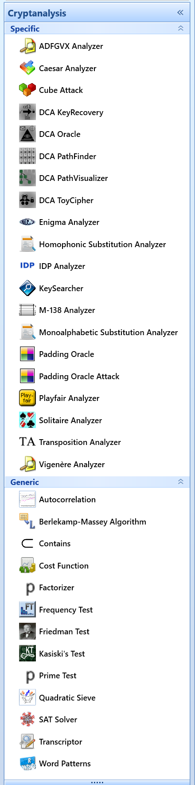

The JCT main menu Analysis (in the Default Perspective) has 8 entries, which refer either to applying analysis of texts or breaking a few classical ciphers only.
In the Internet you find different name for implementations of cryptanalysis algorithms: analyzer, solver or even breaker.
A visualization of the ACO algorithm analysing simple transposition ciphers can be found in the JCT main menu Visuals .
More advanced analyzers, including the world-leading algorithms of George Lasry for Enigma, double-column transposition and homophonic ciphers, are implemented in CrypTool 2 (CT2). CT2 also contains several analyzers against modern ciphers – see the following screenshot from CT2.

Remark
A tabular overview about all cryptographic functions in all CrypTool programs including JCT can be found at the CrypTool website in the function overview.